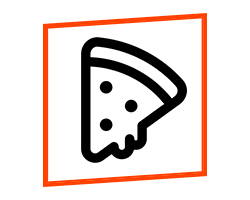

<!-- Web -->
<nav class="flex justify-center items-center my-6 gap-24">
  
  <div class="flex justify-center items-center gap-16">
    <div>
      <ul class="flex gap-10">
        <li><a routerLink="/site/home" class="links">Início</a></li>
        <li><a routerLink="/site/products" class="links">Ver Menus</a></li>
        <li><a routerLink="/site" class="links">Meus Menus</a></li>
      </ul>
    </div>
    <div class="">
      <input
        class="relative bg-gray-200 rounded-lg px-2 py-2 w-64"
        type=""
        placeholder="Pesquisar menus..."
      />
      <svg
        fill="none"
        class="absolute w-9 top-10 cursor-pointer botaosearch"
        viewBox="0 0 24 24"
        xmlns="http://www.w3.org/2000/svg"
      >
        <path
          d="M10 2.75a7.25 7.25 0 0 1 5.63 11.819l4.9 4.9a.75.75 0 0 1-.976 1.134l-.084-.073-4.901-4.9A7.25 7.25 0 1 1 10 2.75Zm0 1.5a5.75 5.75 0 1 0 0 11.5 5.75 5.75 0 0 0 0-11.5Z"
          fill="#ff4000"
          class="fill-212121"
        ></path>
      </svg>
    </div>
  </div>
  <div class="hidden md:flex gap-4">
    <button (click)="toLogin()" class="button loginbutton">Entrar</button>
    <button routerLink="/site/logon" class="button logupbutton">Criar</button>
  </div>
</nav>
